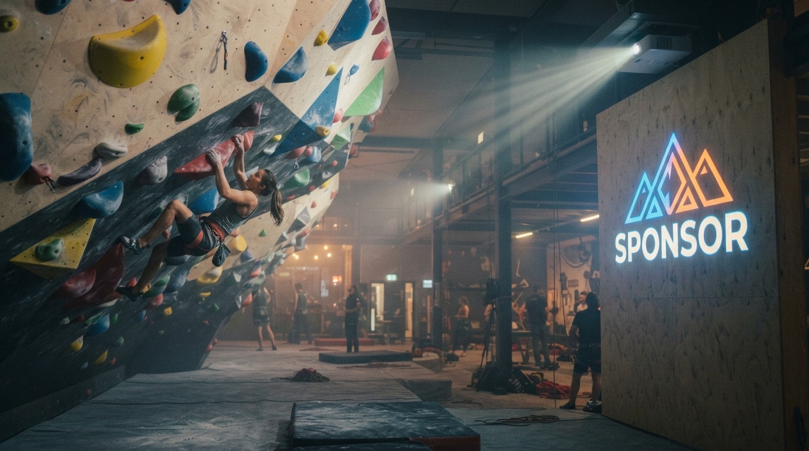

What guests see
- Visuals and sponsor graphics projected onto a small wall near the competition area.
- Finals timer and scoreboard and competition information.
- A display visible to the audience, separate from the active climbing wall.
- Run short visual moments throughout the competition day, including between rounds and during breaks.
- No wall mapping or athlete tracking required.
Delivery & budget
Preparation: 1–2 weeks. Event: one day.
| Projector rental (e.g. Projeect on 8 m^2 until 60 m^2) | from €50 |
| Transport, cables and setup | from €50 |
| Content creation and event execution | from €100 |
| Target total | from €200 |
Estimate for one event day. Final price depends on projector availability, venue access and travel.
Venue setup
- A small wall with a clear view from the competition audience.
- Power and a suitable place for the projector.
- Low enough ambient light for the visuals to remain visible.
Brightness check
The picture looks clearer the darker the room is. This estimate is for one 8,000-lumen projector covering a 6 × 4 m area, placed about 7 to 12 m from the wall.
| Room lighting | Light on the wall | How the picture looks |
|---|---|---|
| Dim room, lights mostly off | about 50 lx | Great: strong, vivid colours |
| Dimmed gym lights | about 100 lx | OK: clear, but a little faded |
| Bright gym lights | about 200 lx | Poor: washed out, hard to see |
If the gym stays at dimmed or bright lighting, we add a second projector on the same area. Two projectors make the picture about twice as bright.
Not sure how bright your room is? Measure the light on the wall with a light meter app. On Android, the free app phyphox (the "Light" experiment) works well. iPhones can't read the light sensor, so use a handheld lux meter (about €20–30) instead. Phone readings are rough, so a ballpark figure is enough.